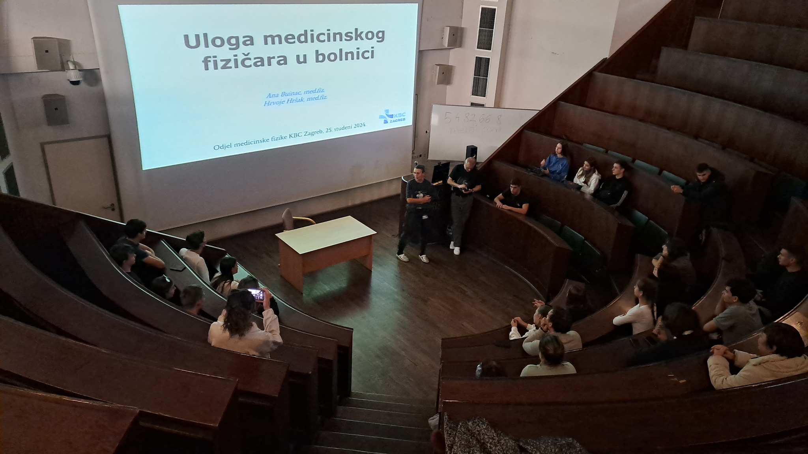

Exchange of experience with colleagues from Croatia
Teachers of PPMG Acad. Ivan Tsenov ", Vratsa took part in mobility under the Erasmus+ program, which was implemented from November 25 to November 30, 2024 in Croatia . The program included lectures and workshops, providing practical experience and observation on the application of nuclear and medical physics. Mobility has been carried out in several significant institutions in Croatia, including leading universities, research centers and hospitals.
A main highlight was a visit to the Ribro Hospital in Zagreb, where participants had the opportunity to learn about the latest applications of medical physics, including the use of radiologic and nuclear technologies for diagnosis and therapy. The visits included observation of work in radiology and oncology wards, as well as participating in discussions with medical professionals.
As part of the mobility, the participants visited the Faculty of Science and Mathematics at the University of Zagreb and the University of Split, where innovative research and curriculum in the field of nuclear physics were presented. It provided an opportunity to exchange experiences with faculty and students, as well as to discuss future collaborations.
One of the key points of the program was the visit to the Ruger Boskovic Institute, a leading scientific research institution in Croatia. Participants had the opportunity to learn about current research projects, including in nuclear and medical physics, and observe high-tech equipment and laboratories.
The program also included a visit to the RIT Croatia (Rochester Institute of Technology) campus, where an interdisciplinary approach to learning combining innovation and practical application in science and technology was demonstrated. The Bulgarian team presented its experience for an integrated approach to education by creating links between different disciplines, which stimulates creativity, critical thinking and the application of knowledge in real life. The lesson “The Northern Lights: a Fusion of Science, Myth and Magic” that we presented, integrates these elements and demonstrates the STEAM approach to education.
This mobility, which is a project in connection with Erasmus Accreditation for School Education KA-121-SCH, provided participants Pepa Pavlova, Lyudmila Jenkins, Dimitrina Milcheva and Annie Pavlova with valuable knowledge, experience and contacts that will be of great benefit to their professional development and for the introduction of new practices in the field of science and education.